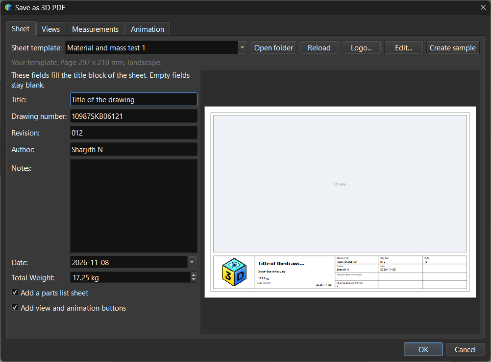
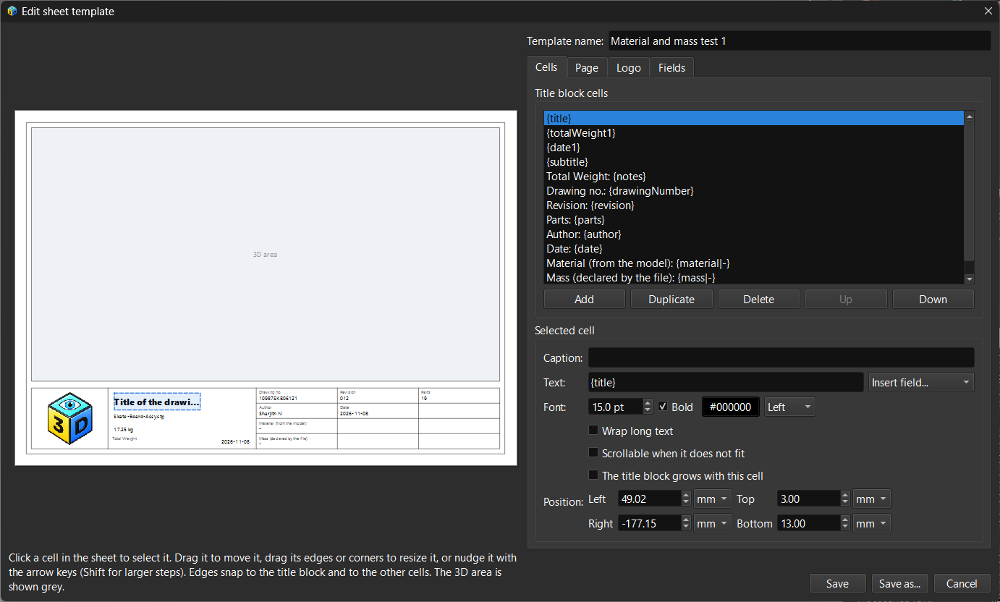

Lesson 30: Save as 3D PDF
Introduction
A 3D PDF is a drawing sheet with a live 3D view in it: the reader rotates and sections the model in Adobe Acrobat or Reader and reads a title block (drawing number, part, material, mass, author, date) around it. File → Save as 3D PDF... writes the visible parts of the scene as one. The sheet around the model comes from a template, and you can edit the templates yourself.
Writing a Sheet
Material and Mass
The sheet can print the material and the mass of the model through the placeholders {material} and {mass}. They are read from the scene and nothing is estimated: the values are the ones the imported file declares, for example the part mass in a JT file or the material name in a STEP file. Mesh Info shows them for the selected mesh. A mass that belongs to a part made of several meshes is counted once. If the file declares nothing, the field prints nothing rather than a guess.
Templates and the Buttons Beside Them
A template is a small file that describes the page (size, orientation, border), an optional logo and the cells of the title block. ModelViewer ships built-in templates; yours are kept in the pdf3d-templates folder of the application data folder and appear in the same list.
| Button | What it does |
|---|---|
| Open folder | Opens your templates folder |
| Logo... | Chooses a logo for the chosen template |
| Edit... | Opens the template editor (below) |
| Reload | Reads the templates from disk again, after you changed a file by hand |
| Create sample | Writes a sample template with a logo and custom fields into your folder, to start from |

The Sheet tab: the template list and its buttons, the fields of the chosen template (including a number field, Total Weight) and the live preview of the sheetThe Template Editor
Edit... opens the template with a large preview at the right and four tabs at the left.
| Tab | What it holds |
|---|---|
| Cells | The cells of the title block. Add, duplicate, delete and reorder them; set the text (the Insert field menu lists every field you can print), font size, bold, colour and alignment; choose whether a cell wraps, scrolls when its text does not fit, or lets the title block grow |
| Page | Page size (standard sizes or a custom size), orientation, margins and where the title block sits. Changing the page carries your cells over to it |
| Logo | Chooses a picture for the title block, or removes it |
| Fields | Your own input fields: text, multi-line text, date, choice from a list, or a number with a unit and limits. A new field asks for its value in the export dialog and can be inserted into any cell |

The template editor: the Cells tab with a cell selected, and the same cell outlined in the preview